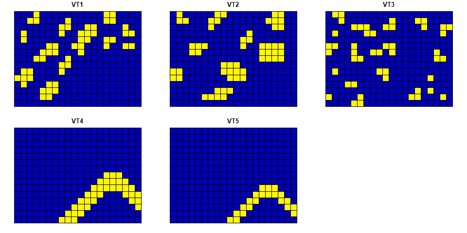
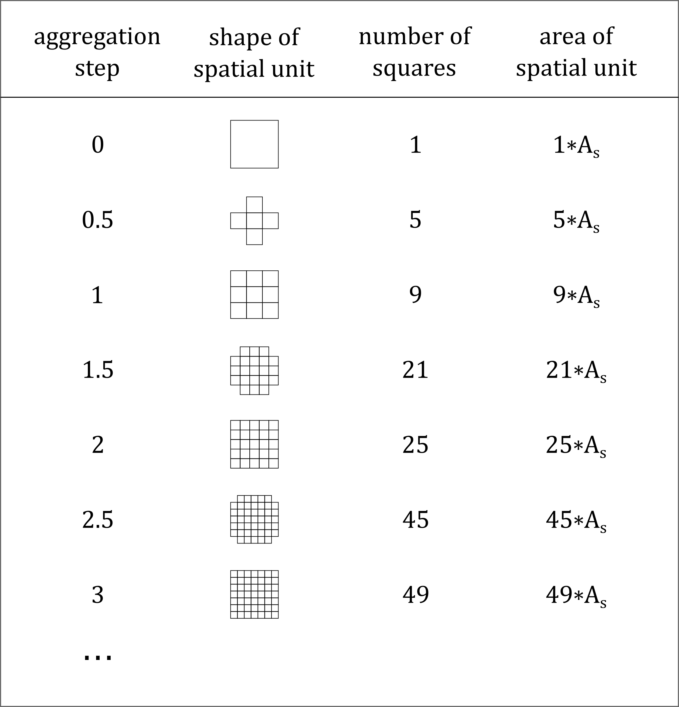
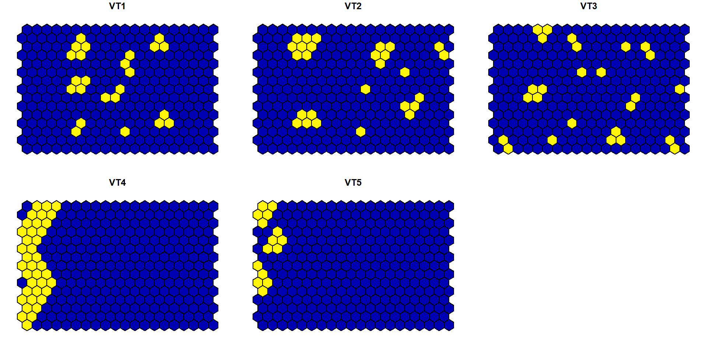
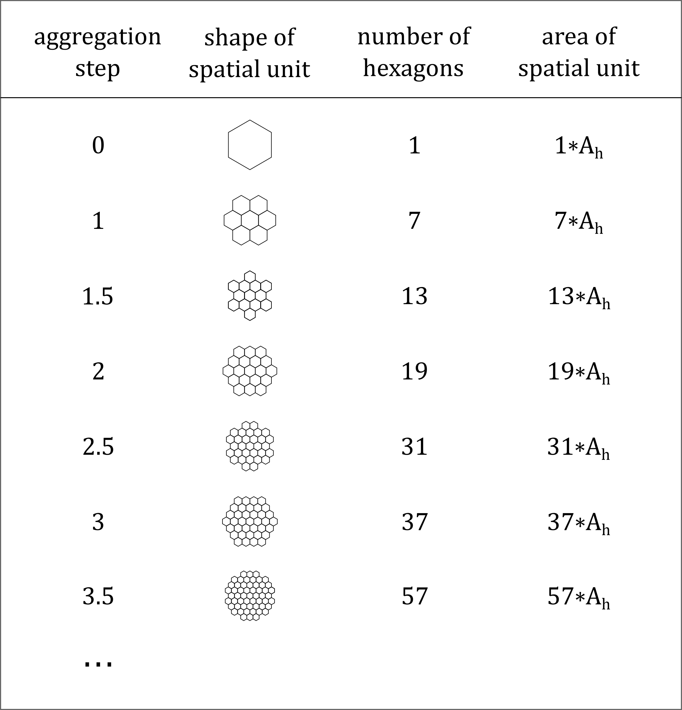

LandComp is a package for quantifying landscape diversity and structure at multiple scales. For these purposes Juhász-Nagy’s functions, i.e. compositional diversity (CD) and associatum (AS), are calculated.
Suggest we have data on some vegetation types along a landscape. Note, there are three requirements:
Have a look at the square grid data.
suppressPackageStartupMessages(library("sf"))
library(LandComp)
data("square_data")
str(square_data)
#> Classes 'sf' and 'data.frame': 300 obs. of 6 variables:
#> $ VT1 : num 0 0 0 0 0 0 0 0 0 0 ...
#> $ VT2 : num 0 0 0 0 0 0 0 0 0 0 ...
#> $ VT3 : num 0 0 0 0 1 1 0 0 0 0 ...
#> $ VT4 : num 0 0 0 0 0 0 0 1 1 1 ...
#> $ VT5 : num 0 0 0 0 0 0 0 0 0 1 ...
#> $ geometry:sfc_POLYGON of length 300; first list element: List of 1
#> ..$ : num [1:5, 1:2] 400000 400000 405000 405000 400000 ...
#> ..- attr(*, "class")= chr [1:3] "XY" "POLYGON" "sfg"
#> - attr(*, "sf_column")= chr "geometry"
#> - attr(*, "agr")= Factor w/ 3 levels "constant","aggregate",..: NA NA NA NA NA
#> ..- attr(*, "names")= chr [1:5] "VT1" "VT2" "VT3" "VT4" ...
Fig. 1. Visualization of the square grid data.
CD and AS of the landscape at the scale of the base square grid (i.e. using the input grid cells as spatial units) can be calculated as
LandComp(x = square_data, aggregation_steps = 0)
#> AggregationStep SpatialUnit_Size SpatialUnit_Area SpatialUnit_Count
#> 1 0 1 2.5e+07 300
#> UniqueCombination_Count CD_bit AS_bit
#> 1 13 2.755349 0.1709469However, Juhász-Nagy’s functions, i.e. compositional diversity (CD) and associatum (AS) should be calculated at multiple scales. For this purpose spatial units can be selected using a buffer of grid cells around the central grid cell, where 0 means the original cell without enlargement.

Fig. 2. Main properties of the spatial units used for the calculation of Juhász-Nagy’s functions. In the integer aggregation steps, radially enlarged spatial units consisting of 9, 25, 49 etc. squares are produced. Enlarged spatial units of fraction aggregation steps are created using the spatial unit of the next integer aggregation step, but excluding the grid cells that touch the corners of the next integer unit. As is the area of the square grid cell of the input data.
The analysis can be done more precise by giving also fraction numbers as input. Thus, the following values of CD and AS can be calculated as e.g.
The example dataset contains pointy-topped hexagons. Note, the methods are also fine for regular hexagonal grids containing flat-topped hexagons. Have a look at the hexagonal grid data.
data("hexagonal_data")
str(hexagonal_data)
#> Classes 'sf' and 'data.frame': 300 obs. of 6 variables:
#> $ VT1 : num 0 0 0 0 0 0 0 0 0 0 ...
#> $ VT2 : num 0 0 0 0 0 0 0 0 0 0 ...
#> $ VT3 : num 0 0 0 0 0 0 0 0 0 0 ...
#> $ VT4 : num 1 1 0 1 1 1 0 1 1 1 ...
#> $ VT5 : num 0 0 1 1 0 0 1 0 0 1 ...
#> $ geometry:sfc_POLYGON of length 300; first list element: List of 1
#> ..$ : num [1:7, 1:2] 649500 649000 649000 649500 650000 ...
#> ..- attr(*, "class")= chr [1:3] "XY" "POLYGON" "sfg"
#> - attr(*, "sf_column")= chr "geometry"
#> - attr(*, "agr")= Factor w/ 3 levels "constant","aggregate",..: NA NA NA NA NA
#> ..- attr(*, "names")= chr [1:5] "VT1" "VT2" "VT3" "VT4" ...
Fig. 3. Visualization of the hexagonal grid data.
CD and AS of the landscape at the scale of the base hexagonal grid (i.e. using the input grid cells as spatial units) can be calculated as
LandComp(x = hexagonal_data, aggregation_steps = 0)
#> AggregationStep SpatialUnit_Size SpatialUnit_Area SpatialUnit_Count
#> 1 0 1 866025.4 300
#> UniqueCombination_Count CD_bit AS_bit
#> 1 12 1.972863 0.1256525However, Juhász-Nagy’s functions, i.e. compositional diversity (CD) and associatum (AS) should be calculated at multiple scales. For this purpose spatial units can be selected using a buffer of grid cells around the central grid cell, where 0 means the original cell without enlargement.

Fig. 4. Main properties of the spatial units used for the calculation of Juhász-Nagy’s functions. In the integer aggregation steps, radially enlarged spatial units consisting of 7, 19, 37 etc. hexagons are produced. Enlarged spatial units of fraction aggregation steps are created using the spatial unit of the next integer aggregation step, but excluding the grid cells that touch the vertices of the next integer unit. Ah is the area of the hexagonal grid cell of the input data.
Analysis can be done more precise by giving also fraction numbers as input. Thus, the following values of CD and AS can be calculated as e.g.
LandComp(x = hexagonal_data, aggregation_steps = c(1, 1.5))
#> AggregationStep SpatialUnit_Size SpatialUnit_Area SpatialUnit_Count
#> 1 1.0 7 6062178 234
#> 2 1.5 13 11258330 187
#> UniqueCombination_Count CD_bit AS_bit
#> 1 16 3.422409 0.5394512
#> 2 21 3.487383 0.5487755Note, in the case of hexagonal grid, steps falling in the interval ]0,1[ cannot be evaluated.